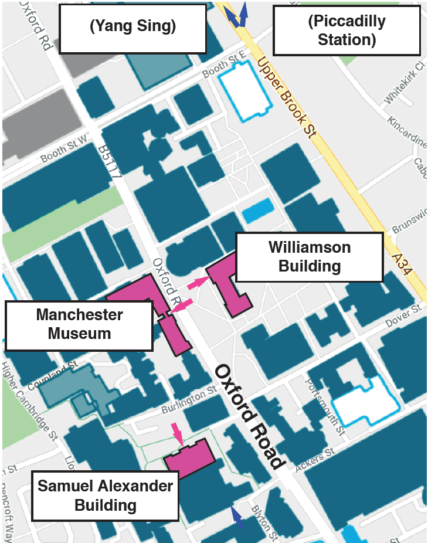
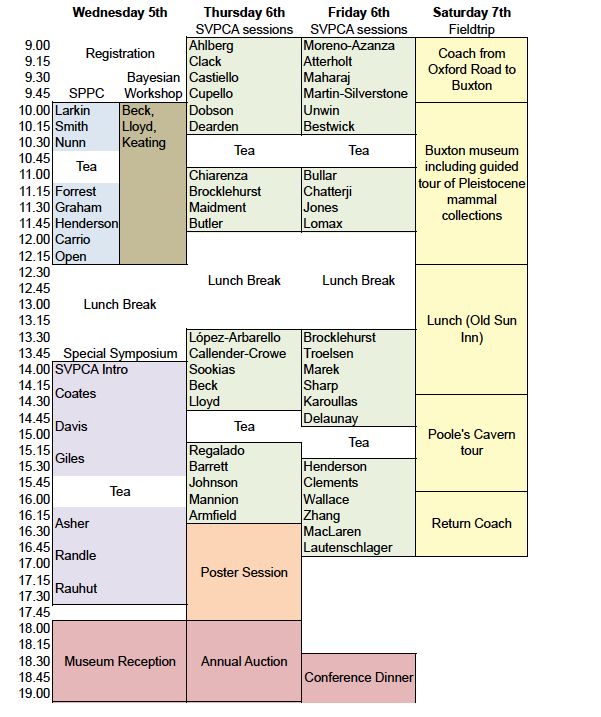
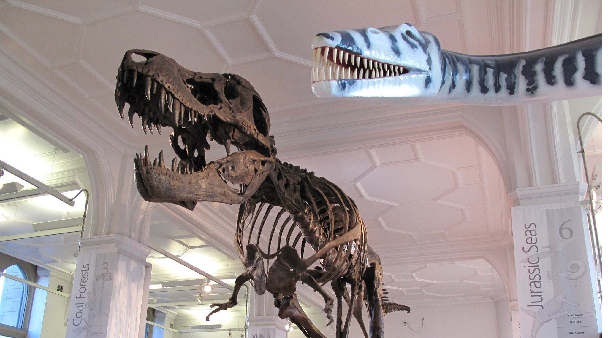

Third Circular
The 66th Symposium on Vertebrate Palaeontology and Comparative Anatomy Universities of Manchester September 5th-8th Final Circular
Registration has now closed for SVPCA. We have had over 130 registrations from the UK, Ireland, Canada, USA, Portugal, Spain, France, Belgium, Germany, Denmark, Norway, Sweden, Switzerland, Italy, Hungary, Australia, South Africa and Brazil. In this final circular you can find details of the event, including schedule of events, travel and accommodation, fieldtrip and workshop. We look forward to seeing you all there. In the mean time, keep updated via our Facebook group, Twitter (@SVPCA_Manc), and our website www.svpca.org.
Sponsorship
Many thanks to the Palaeontographical Society and PLOS ONE.
The Palaeontographical Society is a historic body that exists for the purpose of figuring and describing British fossils by publishing monographs. Benefits of membership include receipt and access to high quality monographs. They also have annual prizes for and funding for palaeontological research. www.palaeosoc.org
PLOS ONE gives researchers a faster path to publishing in a highquality peer-reviewed journal. All work that reaches rigorous technical and ethical standards is published and freely and immediately available to everyone. http://journals.plos.org/plosone/
Meeting Venue and Travel

SVPCA and SPPC will take place at the University of Manchester Oxford Road Campus. Oral sessions will take place at the Samuel Alexander Lecture Theatre in the Samuel Alexander Building (M13 9PP, map below). Registration and tea breaks will take place in the foyer of the same building. The workshop, poster session, and annual auction will take place in the Williamson Building (map below). Step free access to the Samuel Alexander Lecture Theatre is to the rear (purple arrow in the map). The main campus is a short walk (1 mile) or bus ride (#147) from Manchester Piccadilly railway station, which has frequent trains to Manchester Airport. The welcome reception is being held at the fossil galleries of Manchester Museum and the annual dinner is being held at Yang Sing in Manchester’s historic China town (34 Princess Street, M1 4JY).Accommodation and Facilities
There are a number of hotels within short walking distance, including the Pendulum Hotel, Macdonald Manchester Hotel, and Ibis Manchester; all three still have rooms available at the time of writing. Oxford road has plenty of eating and drinking establishments available. Lunch is not provided to delegates, but we recommend Kro bar (Oxford Road) for those wanting a sit down lunch, or just south on Oxford Road is a Sainsbury’s local, Costa Coffee, and a Subway. Each evening has social events, but for after we recommend either Kro bar again, Big Hands (Oxford Road) or Sandbar (Grosvenor Road). You will likely find the local hosting committee at one of these after hours! For evening meals, Manchester’s famous “Curry Mile” is a short walk (0.6 miles) south of the University Campus and has no shortage of options. Samuel Alexander Building Manchester Museum Williamson Building (Piccadilly Station) (Yang Sing) Oxford Road
Programme and Abstract Volume
A brief outline of the programme can be found below. The full line-up, including talk and poster titles, is at the end of this document. An electronic abstract volume will be made available shortly before the conference. A hard copy of the schedule of events will be available on registration, but to reduce waste we will not be printing hard copies of the abstract volume. Instructions for oral and poster presentations will be emailed to presenters.

SPPC
The Symposium of Palaeontological Preparation (SPPC) will take place on the morning of Wednesday 5th in the Samuel Alexander Theatre. It will finish with a short open session during which people are encouraged to bring along fossil material they would like to present or discuss. Please email Cindy.Howells@museumwales.ac.uk if you would like to participate. The SPPC is supported by the Geological Curators Group (GCG).
Workshop: Introduction to Bayesian phylogenetic analysis for palaeontologists
Led by Robin Beck (Salford), with assistance from Graeme Lloyd (Leeds), and Joe Keating (Manchester) this workshop will provide an introduction to the principles underlying Bayesian phylogenetic analysis of palaeontological (morphological) data, and how such analyses can be implemented using the widely-used program MrBayes. Topics covered will include the Lewis model for morphology and its variants, model fit/comparison with Bayes factors, MCMC and how to determine stationarity and convergence between chains, and tip-dating for inferring divergence times. Participants should bring their own laptops, and should have downloaded MrBayes 3.2.6 (available here: https://github.com/NBISweden/MrBayes/tree/v3.2.6). They will also need a simple text editor for editing input files (e.g. Notepad in Windows, TextEdit in macOS). Example datasets will be provided, but participants are encouraged to bring their own: ideally, these should be in NEXUS format, with an estimated age (either a point estimate or age range) for each taxon, and for the age of the root node. The workshop is now at capacity. Thanks to those who registered.
Special Symposium: Advances in the Vertebrate Tree of Life
The afternoon of first day of the meeting with feature a special symposium on “Advances in the Vertebrate Tree of Life” with invited speakers from the UK and abroad giving extended talks (30 minutes) that highlight the cutting edge advances that fossils have made in understanding vertebrate phylogeny. Scheduled speakers include Robert Asher (Cambridge), Michael Coates (Chicago), Katie Davis (York), Sam Giles (Oxford), Emma Randle (Bath), Oliver Rauhut (Munich). Details can be found below.
Welcome Reception
The icebreaker reception will follow the special symposium. It will start at 18.00, Wednesday 5th, in the fossil galleries of the Manchester Museum. It is open to all registered delegates – beer, wine soft drinks, and snacks will be provided.

Poster Session
Posters will be presented during the dedicated poster session (16.30 -18.00 of Thursday 6th), during which we ask presenters to be in attendance. This will take place in G12 of the Williamson building, just across the road from the Samuel Alexander Building. For logistical reasons posters will be on display for this day only, so we ask delegates to please attend the dedicated poster session. Snacks, wine, beer, and other refreshments will be provided.
Annual Auction
The annual auction will immediately follow the poster session, starting at 18.00 in the Williamson Building (G03 lecture theatre). Proceeds of the auction will go the Jones-Fenleigh Fund, to support future SVPCA and SPPC attendance by those without institutional funding. Please do think of things you have to donate, be they specimen replicas, books, monographs, artwork, clothing, toys – anything will be gratefully received! Please bring your items to the registration desk or post them in advance to Robert Sansom. Unfortunately the lecture theatre will not be able to accommodate all delegates. Places will be allocated on a first-come first-served basis to delegates who email SVPCAMAN2018@listserv.manchester.ac.uk.
Annual Dinner
The annual dinner will take place at the award winning Yang Sing in Manchester’s historic China town. It can be found at 34 Princess Street (M1 4JY). This is a short walk (1 mile) from the conference venue. Simply head north on the A34 (Upper Brook St), which becomes Princess Street. Please arrive at 18.30 for dinner at 19.00. The event has proved quite popular and is now at full capacity – thank you to those who already registered for this event.
PLOS ONE Student Presentation Prizes
Following the generous support of PLOS ONE, cash prizes will be awarded to the best student talk and the best student poster (£100 each). The prize will be judged by a committee of members of the SVPCA steering group, and winners will be announced at the annual dinner.
Fieldtrip – Saturday September 8th
The ‘field’ trip this year will begin with a morning visit to the recently refurbished Buxton Museum and Art Gallery. Here we will have an opportunity to view the new galleries, including the ‘Wonders of the Peak’, and will also be given a guided tour of the palaeontology stores, housing the important archive and collections of the Victorian ‘Cave Hunters’ Sir William Boyd Dawkins and Dr J. Wilfred Jackson. Lunch will be taken at a local pub after which we will walk the short distance to Poole’s Cavern, where will have a guided tour underground into the spectacular caves and caverns. This natural cave in Carboniferous Limestone, was occupied from the late Neolithic Period, and was opened as a showcave in 1853. Coach leaves Oxford Road at 9.00 and returns to Manchester for 17.00. The cost of the field trip (£30) will cover coach travel to and from Manchester, as well as admission to the Museum and Cavern. This event is open to late registrations – anybody wishing to attend should email john.nudds@manchester.ac.uk before August 17th.
Social Media
The official hashtag for the meeting is #SVPCA2018, and we encourage people to discuss the meeting and talks on social media. Our default assumption is that discussions of presentations on social media are allowed. However, please respect any request by an author not to disseminate the contents of their talk or poster. Authors should use a “no tweeting” symbol on their slides or posters to clearly express that they do not want their presentation posted or discussed online.
Contact
If you have questions, you can email Robert.sansom@manchester.ac.uk and SVPCAMAN2018@listserv.manchester.ac.uk.
Host Committee
Robert Sansom (Chair, UoM), Robin Beck (UoS), Charlotte Brassey (MMU), Robert Brocklehurst (UoM), Leah Callender-Crowe (UoM), Joe Keating (UoM), Dean Lomax (UoM), John Nudds (UoM), Elsepth Wallace (UoM) University of Manchester (UoM), University of Salford, and Manchester Metropolitan Museum (MMU).
SVPCA Steering Committee
Richard Butler, Susannah Maidment, Robert Sansom, Richard Forrest, Martin Nunn, Cindy Howells, Emma Dunne, Graeme Lloyd, Jeff Liston.